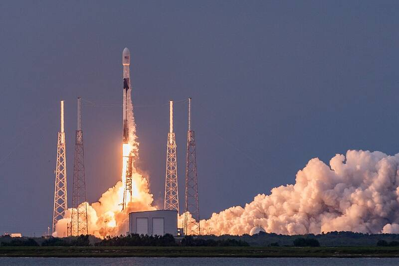

Patrick SFB and Cape Canaveral Florida Florida · Military base · 28.236°N, 80.612°W A Falcon 9 launch from Cape Canaveral, 2020. Photo: Joshua Conti, U.S. Space Force, Public domain (source) East Coast space launch hub. 1 Open in the interactive Watcher Sources Patrick Space Force Base Wikipedia